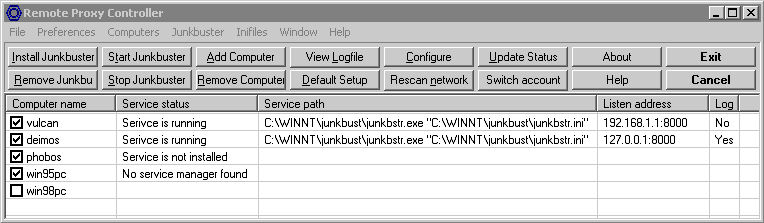
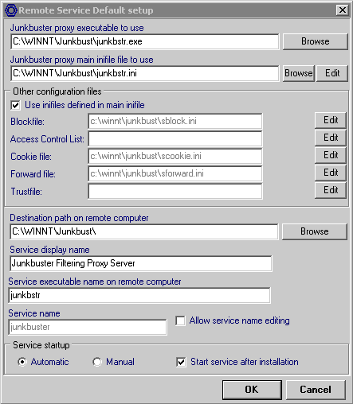

However, I found the use of it under windows NT/2000 less than optimal. One could start it in the run section of the registry, but then it would only start after a user has logged in. This makes it difficult to use it as a normal proxy for background processes.
The situation under Linux is much better: there it just runs as a deamon. So the trick was to convert Junkbusters to the WinNT equivalent of a Unix deamon, a service. The source code presented here is an expansion to the original Junkbusters code, with an extra compile target. The service executable is included for those who do not have a compiler available.
You can install the Junkbusters service by running the executable with the -i or --install flag, uninstall it with -u or --uninstall, and check the setup with -t or --test.
The program is distributed under the terms of the GNU General Public License, as is Junkbuster.

The usage of the program is almost identical to that of RSCC. Only the default setup differs significantly because there are now several inifiles to select, and the user can select whether he wants to select them manually or copy them from the exact locations given in the main inifile.

Warning: Remote Proxy Controller cannot correctly handle main inifiles where other inifiles do not have a path, or are defined with UNC paths! In those cases you have to select all inifilenames manually.